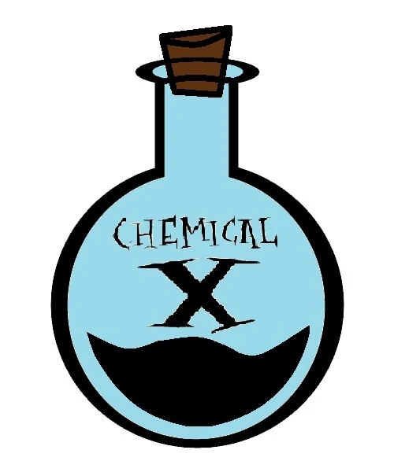

Chemical X

Description
A specialty of Professor Utonium. Used for some extra *kick*.
Ingredients
- Molasses
- Paprika
- Everything not nice
Steps
- Add 2 cups of molasses to 5 cups of water and stir thoroughly.
- Add a pinch of paprika and boil the solution on medium heat for 10 minutes.
- Add everything not nice and allow the solution to cool. Use sparingly and whatever you do, do not use this to create little girls!